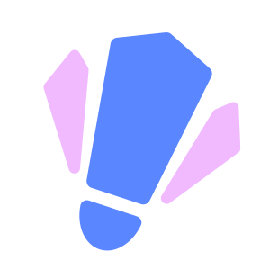
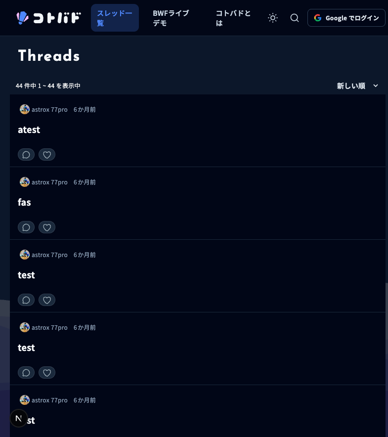
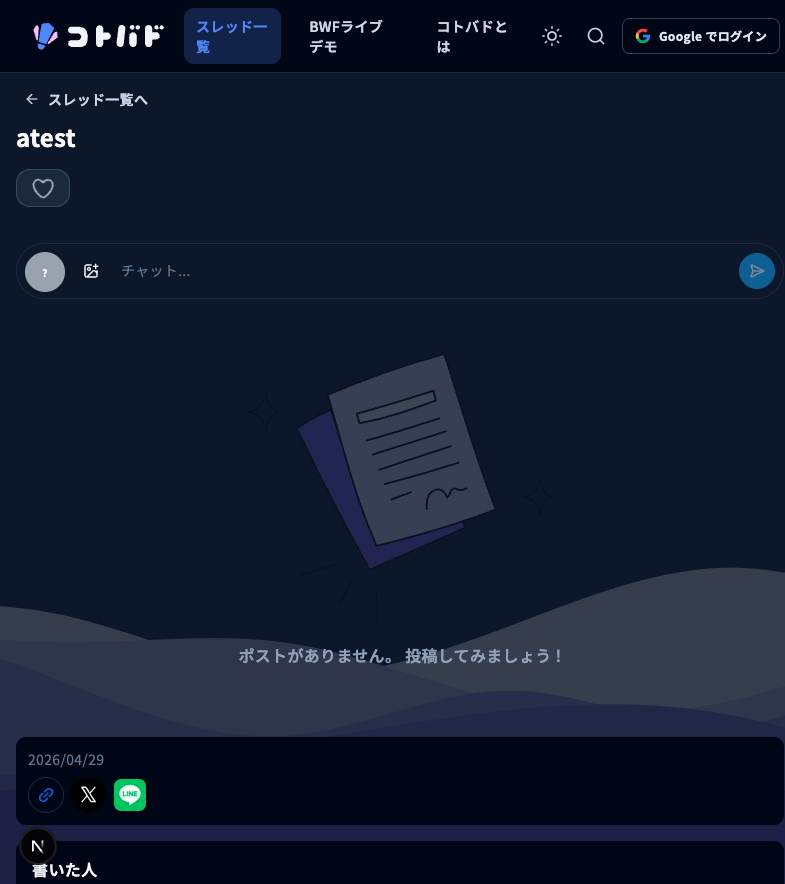
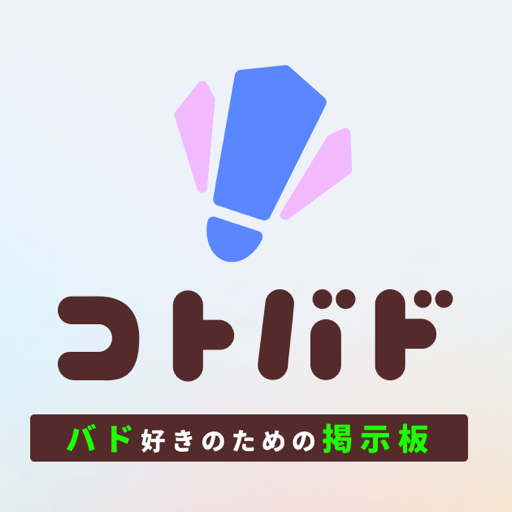

kotobad
バドミントン特化の掲示板 Web サイト
交流の場に、試合通知とライブスコアを足した
技育展2026 オンライン予選 / チーム 劇団ひとり / tatu
今日話すこと
バドミントンは、マイナースポーツ
専用の交流の場がない
情報が、あちこちに散らばる
SNS やチャットに会話が分散
試合の通知や結果を追う手段が乏しい
コミュニティが盛り上がりにくい
kotobad が解決する
掲示板 × 試合通知 × ライブスコア
交流の場に、試合通知とライブスコアを足した


主な機能
掲示板 — ユーザーがスレッドを立てて会話
自動スレッド — 試合ごとに自動生成、ライブチャット
試合通知 — 気になる試合の通知を受け取る
ライブスコア — 進行中の点数をリアルタイム表示
ユーザー体験にこだわる
PWA 対応、ホーム画面から起動
クリック時のローディングアニメーション
モバイル最適化のナビゲーション
プルトゥリフレッシュ
使用技術
 Next.js 16
Next.js 16 React 19
React 19 TypeScript
TypeScript Cloudflare
Cloudflare Zod
Zod Tailwind
Tailwind Google OAuth
Google OAuthフロントエンド: Next.js / バックエンド: Hono / DB: Cloudflare D1 / 保存: R2
システム構成
flowchart LR
U[ユーザー / PWA] --> FE[Next.js 16]
U --> BFF[Next.js BFF]
BFF -->|Cookie + HMAC| BE[Hono Backend]
FE -->|Server fetch + HMAC| BE
BE -->|Drizzle| D1[(D1)]
BE --> R2[(R2)]
U -->|WebSocket| BE
BE --> DO[ThreadRoom DO]
DO -->|post.created| U
リアルタイム: WebSocket + Durable Objects
Thread 単位の Durable Object が socket を集約
新規投稿時に post.created を通知
通知を受けたら SWR で D1 の正本を再取得
WebSocket は変更通知、HTTP は正本取得
型安全: 共有 Zod スキーマ
Frontend と Backend で同じ Zod を共有
Validation、OpenAPI、TypeScript 型、Response 検証を一つの契約から
HTTP 境界の runtime data を検査
キャッシュと静的アセット保護
ライブデータは no-store、タグは 5 分、静的は 1 年 immutable
iOS で古い CSS が削除済み woff2 を要求し 404 連発した障害
R2 スナップショットで前回参照 asset を検査
欠落時は本番 origin から復旧、復旧不能なら build 失敗
セキュリティへのこだわり
AI に一任せず、XSS / CSRF を自分の目で確認
ペネトレーションテストを実施
HMAC + CSRF + Origin の多層防御
データベース設計
Cloudflare D1 + Drizzle ORM
threads / posts / tags / reactions / notifications
(threadId, localId) の unique 制約で採番競合を防ぐ
最大 3 回リトライ
地味なこだわり

ロゴ (文字とアイコン) を自作
PWA 対応、プルトゥリフレッシュ、ボトムナビ
Safe area、Reduced motion 対応
今後の展望
モバイルネイティブアプリの開発
オフライン対応の強化
Web Push 通知
コミュニティの拡大
まとめ
バドミントン特化の掲示板 + 試合通知 + ライブスコア
Cloudflare 上に集約したフルスタック構成
リアルタイム通知と型安全な API 契約
UX とセキュリティへのこだわり
ありがとうございました
ご質問をお待ちしています